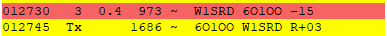

User-agent: Mozilla/5.0 (Windows NT 10.0; Win64; x64; rv:91.0) Gecko/20100101 Thunderbird/91.9.1
Seems to have gone QRT.
I was having a very hard time decoding yet I could hear his audio
quite well. Not sure what that was about. Narrowed the filter down
quite a bit to get reliable copy.

I did not print the RR73. It would be #336 (woo hoo!) if I am in the
log. Not celebrating the ATNO yet, though.